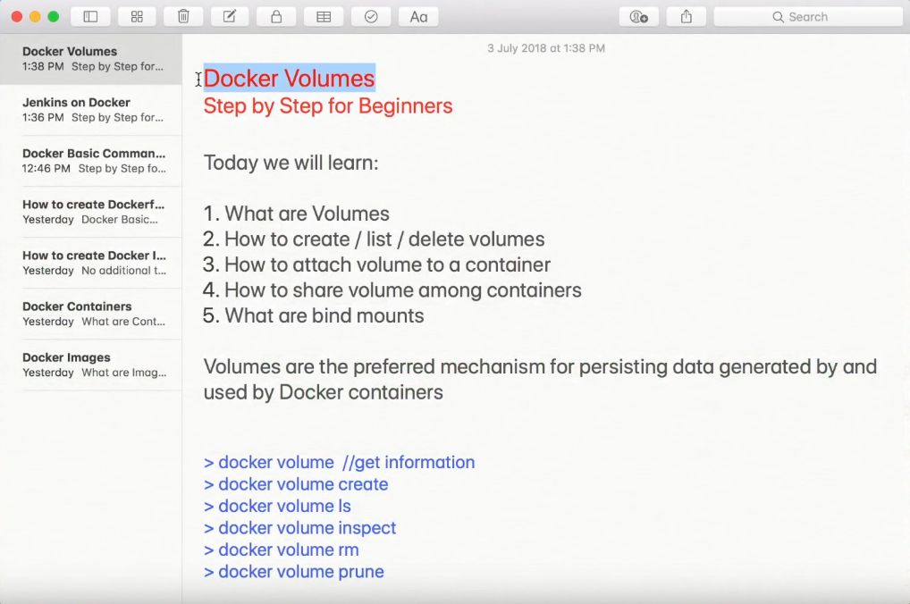
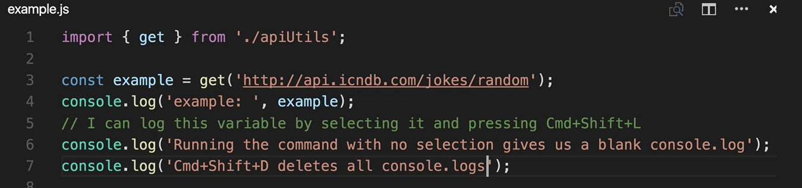

Step 1: Install docker-compose.~$ docker-compose -v 1. https://github.com/docker/compose/rel... or 2. Using PIP: pip install -U docker-compose Step 2: Create docker compose file at any location on you system.~$ mkdir DockerComposer ~$ cd DockerComposer ~/docker-composer$ touch docker-compose.yml ~/docker-composer$ ls ~/docker-composer$ Step 3: Check the validity of file by command.~/docker-composer$ docker-compose config ~/docker-composer$ Step 4: Run docker-compose.yml file by command.~/docker-composer$ docker-compose up -d ~/docker-composer$ ~/docker-composer$ docker ps ~/docker-composer$ ~/docker-composer$ docker-compose down ~/docker-composer$ ~/docker-composer$ docker ps ~/docker-composer$ Step 5: Using the parameter scale: database=x, where x is the number of duplication.~/docker-composer$ docker-compose up -d --scale database=4 ~/docker-composer$ ~/docker-composer$ docker ps ~/docker-composer$ ~/docker-composer$ docker-compose down ~/docker-composer$ ~/docker-composer$ docker ps |
docker-compose version 1.23.1, build b02f130 => DockerComposer => docker-compose.yml => docker-compose.yml WARNING: MUST WRITE AS INDICATED BELOW without the 'underscore' and 'bar' characters. services:
database:
image: redis
web:
image: nginx
ports:
- published: 8080
target: 80
version: '3.7'
NOTICE: -d => detach mode Creating network "docker-composer_default" with the default driver
Creating docker-composer_database_1_421a6e3a6169 ... done
Creating docker-composer_web_1_9981f0b5eb5c ... done
CONTAINER ID IMAGE COMMAND CREATED STATUS PORTS NAMES
226a961a20df nginx "nginx -g 'daemon of…" 4 hours ago Up 4 hours 0.0.0.0:8080->80/tcp docker-composer_web_1_cfd01f7208ab
668f7e000b41 redis "docker-entrypoint.s…" 4 hours ago Up 4 hours 6379/tcp docker-composer_database_1_e099e097f544
Stopping docker-composer_database_1_a8aef6d78db5 ... done
Stopping docker-composer_web_1_69cdf1a7a52b ... done
Removing docker-composer_database_1_a8aef6d78db5 ... done
Removing docker-composer_web_1_69cdf1a7a52b ... done
Removing network docker-composer_default
CONTAINER ID IMAGE COMMAND CREATED STATUS PORTS NAMES
Creating network "docker-composer_default" with the default driver Creating docker-composer_web_1_93acf43911f2 ... done Creating docker-composer_database_1_d167ab9231e8 ... done Creating docker-composer_database_2_df4041cf9f3a ... done Creating docker-composer_database_3_536dceea3353 ... done Creating docker-composer_database_4_a2bdf50e5467 ... done CONTAINER ID IMAGE COMMAND CREATED STATUS PORTS NAMES af5683be0fbd redis "docker-entrypoint.s…" 11 minutes ago Up 11 minutes 6379/tcp docker-composer_database_1_e1da64de8971 eb3d4ecdfcdc redis "docker-entrypoint.s…" 11 minutes ago Up 11 minutes 6379/tcp docker-composer_database_4_cc7e53697f89 53c2ee1a4d93 redis "docker-entrypoint.s…" 11 minutes ago Up 11 minutes 6379/tcp docker-composer_database_3_ac91a3d25188 f35caedf8b40 redis "docker-entrypoint.s…" 11 minutes ago Up 11 minutes 6379/tcp docker-composer_database_2_40d9922137b4 be328a2a0f4d nginx "nginx -g 'daemon of…" 11 minutes ago Up 11 minutes 0.0.0.0:8080->80/tcp docker-composer_web_1_a951e894bed4 Stopping docker-composer_database_1_e1da64de8971 ... done Stopping docker-composer_database_4_cc7e53697f89 ... done Stopping docker-composer_database_3_ac91a3d25188 ... done Stopping docker-composer_database_2_40d9922137b4 ... done Stopping docker-composer_web_1_a951e894bed4 ... done Removing docker-composer_database_1_e1da64de8971 ... done Removing docker-composer_database_4_cc7e53697f89 ... done Removing docker-composer_database_3_ac91a3d25188 ... done Removing docker-composer_database_2_40d9922137b4 ... done Removing docker-composer_web_1_a951e894bed4 ... done Removing network docker-composer_default |
| Docker Beginner Tutorial 1 - What is DOCKER (step by step) | Docker Introduction | Docker basics | Docker Swarm| Step by Step | What is Docker Swarm | How to create Docker Swarm | What is Docker Volume | How to create Volumes | What is Bind Mount | Docker Storage |
|---|---|---|
| Docker Beginner Tutorial 1 - What is DOCKER (step by step) | Docker Introduction | Docker basics | Docker Swarm| Step by Step | What is Docker Swarm | How to create Docker Swarm | What is Docker Volume | How to create Volumes | What is Bind Mount | Docker Storage |
|---|---|---|
|  |
| Command | Output |
|---|---|
Step 1: Install docker-compose.~$ docker-compose -v 1. https://github.com/docker/compose/rel... or 2. Using PIP: pip install -U docker-compose |
grasshopper@HP-Laptop:~/ViewPort$ docker info Containers: 3 Running: 0 Paused: 0 Stopped: 3 Images: 9 Server Version: 18.06.1-ce Storage Driver: aufs Root Dir: /var/snap/docker/common/var-lib-docker/aufs Backing Filesystem: extfs Dirs: 52 Dirperm1 Supported: true Logging Driver: json-file Cgroup Driver: cgroupfs Plugins: Volume: local Network: bridge host macvlan null overlay Log: awslogs fluentd gcplogs gelf journald json-file logentries splunk syslog Swarm: inactive Runtimes: runc Default Runtime: runc Init Binary: docker-init containerd version: 468a545b9edcd5932818eb9de8e72413e616e86e runc version: N/A (expected: 69663f0bd4b60df09991c08812a60108003fa340) init version: 949e6fa (expected: fec3683) Security Options: apparmor seccomp Profile: default Kernel Version: 4.13.0-43-generic Operating System: Ubuntu Core 16 OSType: linux Architecture: x86_64 CPUs: 2 Total Memory: 5.299GiB Name: HP-Laptop ID: N4CA:7WSE:RTFR:PAUI:JQIQ:2TAE:H6VJ:QMD3:Y4EK:LJ45:N3EF:C4FO Docker Root Dir: /var/snap/docker/common/var-lib-docker Debug Mode (client): false Debug Mode (server): true File Descriptors: 22 Goroutines: 43 System Time: 2018-11-08T11:24:11.300650446-05:00 EventsListeners: 0 Username: thecytron Registry: https://index.docker.io/v1/ Labels: Experimental: false Insecure Registries: 127.0.0.0/8 Live Restore Enabled: false WARNING: No swap limit support grasshopper@HP-Laptop:~/ViewPort$ |
|  |